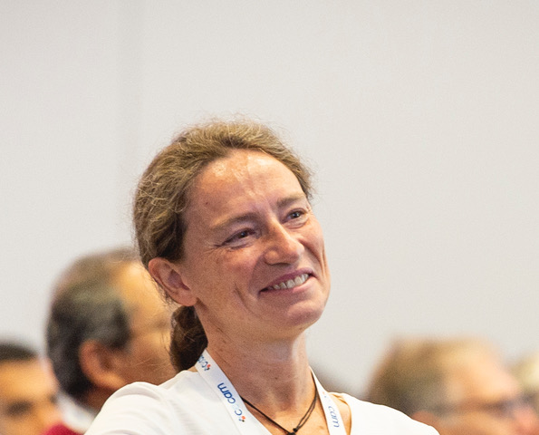

OSSCAR Team#
Main Team#
Project Manager
Deputy Project Manager
Deputy Project Manager
Team Member
Team Member
Team Member
Steering Committee#
The Steering Committee is composed by the members of the Managing Team together with Prof. Nicola Marzari and Prof. Berend Smit.